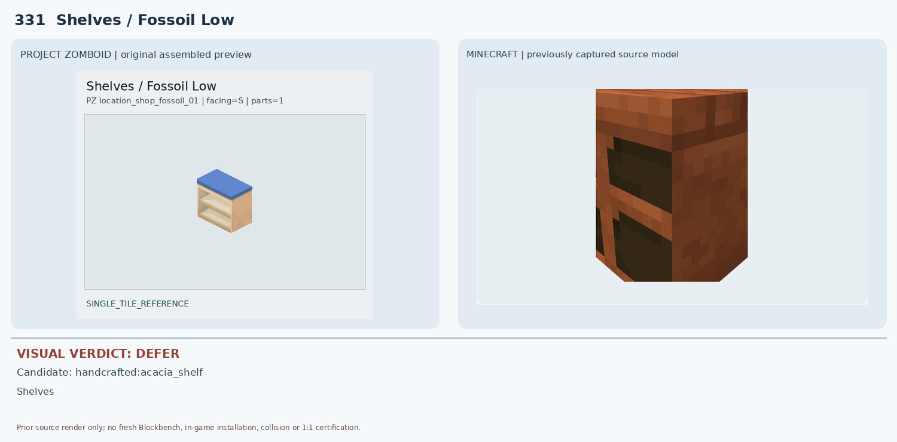
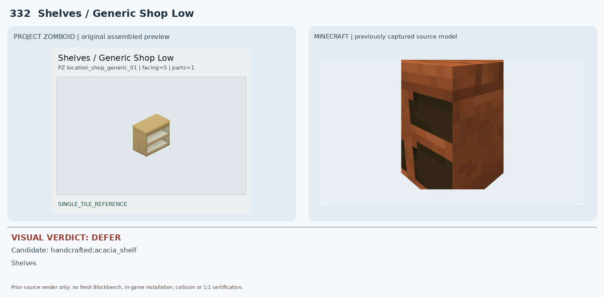
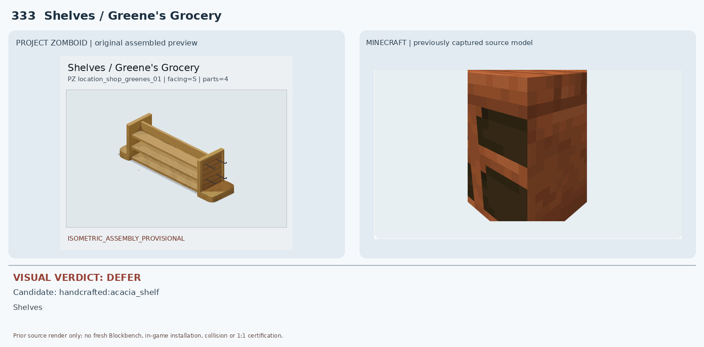
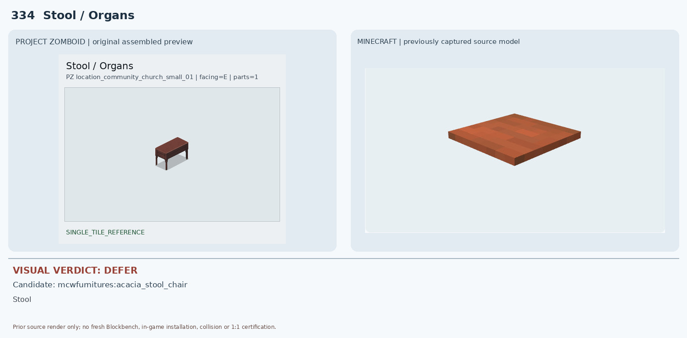
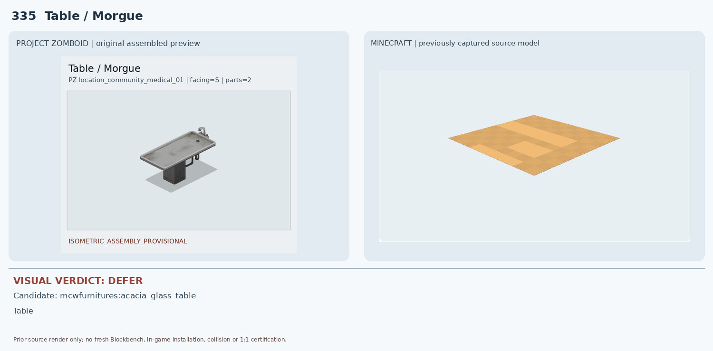
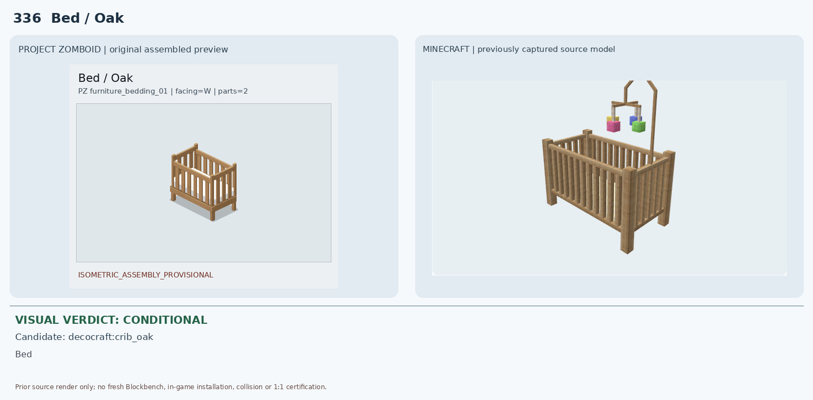
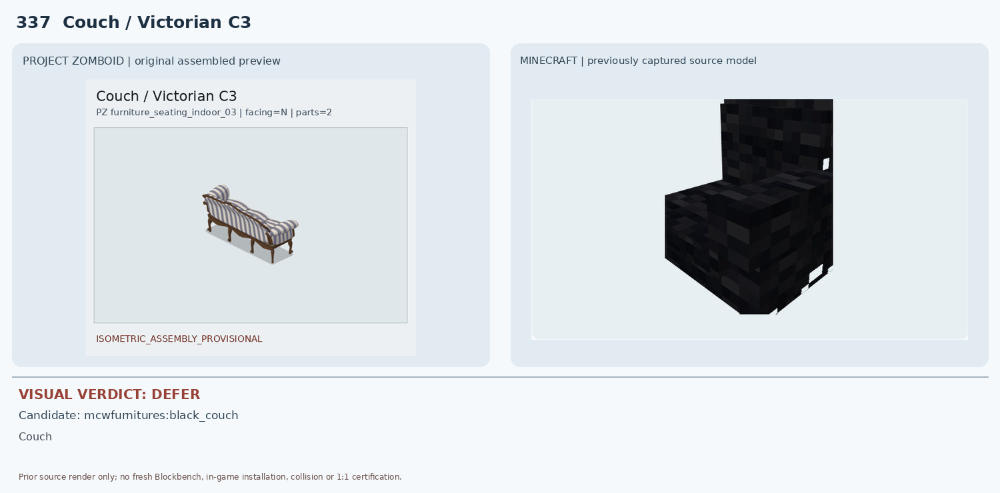
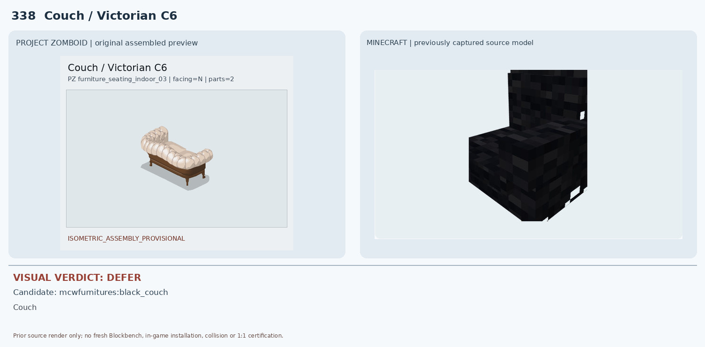
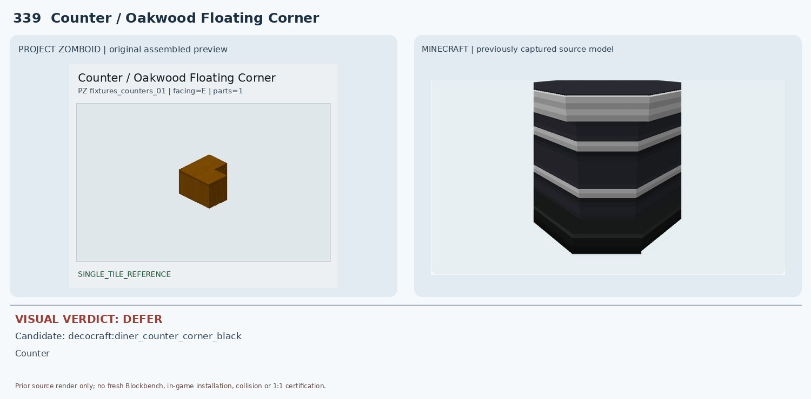
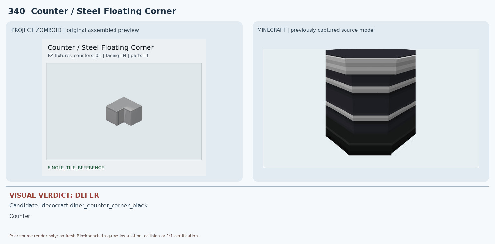

331 Shelves / Fossoil Low — DEFER

Handcrafted 아카시아 후보는 주황빛 닫힌 상자처럼 보이고 어두운 전면 구멍만 있으며 파란 상판·밝은 2단 오픈 선반 구조가 없음
1 conditional, 9 deferred. Existing source render evidence only; no new native render or in-game certification.

Handcrafted 아카시아 후보는 주황빛 닫힌 상자처럼 보이고 어두운 전면 구멍만 있으며 파란 상판·밝은 2단 오픈 선반 구조가 없음

Handcrafted 아카시아 후보는 어두운 주황 갈색 상자형 렌더이며 열린 밝은 선반판 두 개가 나타나지 않음

MC 1×1 상자형 아카시아 선반은 4블록 길이와 3단 선반, 측면 걸이 및 개방형 구조를 재현하지 못함

Macaw 아카시아 스툴은 얇은 평판 일부만 렌더되어 네 다리·측면 프레임이 전혀 검증되지 않으며 색도 밝은 주황 계열

MC 아카시아 유리 탁자 후보는 노란색 평판 부분만 보이며 금속 트레이·수도꼭지·중앙 기둥 및 1×2 길이가 없음

Decocraft crib_oak는 밝은 목재 난간·다리의 전체적인 사물 종류와 형태가 상당히 비슷하지만 상부 모빌과 장식물이 추가되고 높이·크기 및 설치 점유가 불확실

MC 검정 소파는 단색 검정 직각 쿠션과 블록형 형태로 줄무늬·곡선 팔걸이·목재 장식 다리가 전혀 다름

MC 검정 직선형 소파는 색상과 등받이 곡률, 크림색 버튼 장식, 다리 구조가 전부 불일치

Decocraft 검정·은색 줄무늬 다이너 코너 카운터는 재질·색·전면 패널이 다르고 바닥형 모델로 벽면 부착 상부 가구를 대체할 수 없음

Decocraft 검정·은색 줄무늬 다이너 코너 카운터는 검정 바닥형 가구로 회색 벽걸이 코너 금속장의 색상·재질·설치 높이가 다름